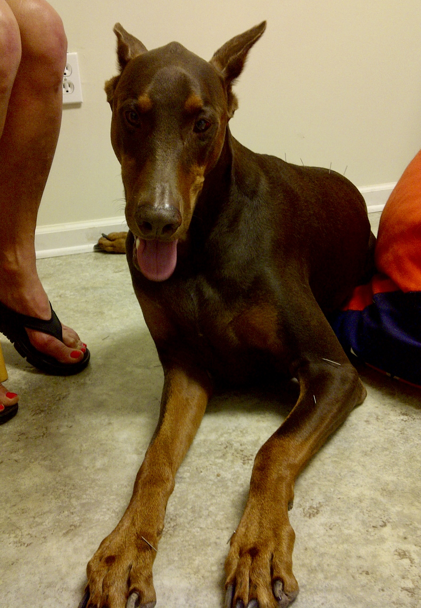
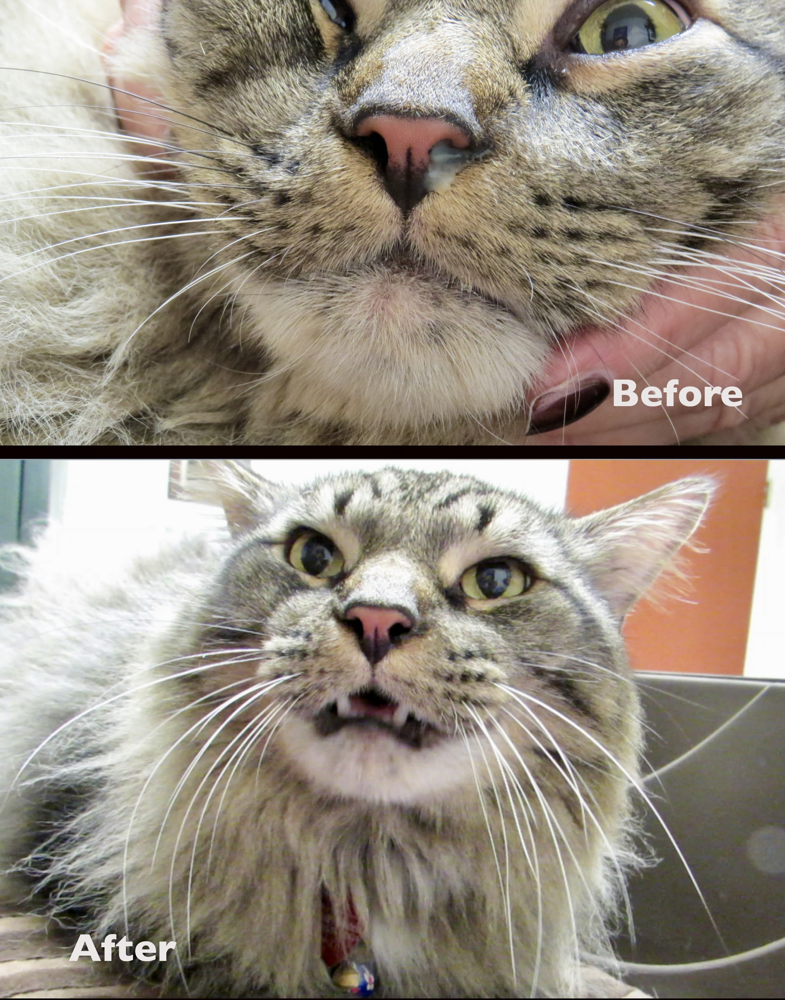

Frequently Asked Questions
Points of acupuncture or "Shu Xue" are special points where the Qi is collected. Ancient Chinese doctors discovered
over 150 acupuncture points in animals. Modern research shows that acupuncture points are found in areas of high
concentration of free nerve endings, small arterioles, lymphatic tissue, blood vessels, or mast cells.
Acupuncture points
can be stimulated with dry needles, moxibustion, electric stimulation, laser therapy or aqua-acupuncture. Stimulation of
acupuncture points causes a release of beta-endorphins, serotonins and other neurotransmitters that help relieve pain.
Acupuncture is a very safe medical procedure when administered by a qualified physician.
Qi is the life force or vital energy in animals. In healthy animals Qi flows smoothly throughout the body 24 hours a day along the channels called meridians. If Qi is interrupted, the body becomes unbalanced and disease can occur. Pain is obstruction or interruption of Qi. Acupuncture helps to resolve this blockage or stagnation and brings the body in balance and health promotion.
Bone and muscle problems: pain, back pain, disk problems, osteoarthritis, degenerative joint disease of the muscle.
Neurological problems: convulsions, laryngeal hemiplegia, facial and radial nerve palsy, paralysis/ paresis.
Gastrointestinal disorders: diarrhea, gastric ulcers, colic, vomiting, constipation and retention.
Chronic disease: anhidrosis, palpita, asthma, cough, uveitis, behavioral problems, Cushing's disease, hypothyroidism, infertility,
hyperthyroidism, renal failure, geriatric weakness, skin problems.
Contraindications: Fractures, pregnancy, open wounds, infectious diseases
Dr. Clemons-Chevis treats any non-human animal, including small animals (cats and dogs), large animals (equine), as well as exotics (birds, rodents, reptiles). She also specializes in the treatment of marine mammals (dolphins and sea lions).
Prior to your first visit, you will be asked to complete a questionaire about your animal to provide more information on their health history
as well as personality and behavior. This enables Dr. Clemons-Chevis to better diagnose your animal's condition, but also determine the their Consitution,
which is a classification system used in TCVM.
During the initial visit, Dr. Clemons-Chevis will perform a TCVM evaluation which includes checking the pulses,
tongue, and A-shi or reaction points, and medical manipulation (chiropractic assessment) of all joints and back. Once a TCVM pattern and diagnosis is determined,
a treatment plan will be discussed and started. This may include acupuncture, medical manipulation (chiropractic adjustment), as well as Chinese herbs, massage therapy and food therapy
that are done by the owner at home.
The initial visit tyically lasts 60 minutes and subsequent visits typically last 45-60 mins depending on the methods used. Each visit is one-on-one and Dr. Clemons-Chevis stays with the
animal for the duration of the treatment.
The number of treatments needed will depend on the type, duration, and severity of the issue. Dr. Clemons-Chevis typically recommends a minimum
of 3-5 weekly treatments to see a significant response. Follow-up visits are scheduled as needed and are dependent on the condition and response of the animal.
For acute cases a single treatment may help. Older animals typically require more treatments because their condition is usually chronic.
Chronic problems may require 3 to 10 treatments. Degenerative problems may require monthly treatments.
Case Studies
Using TCVM to fix chronic skin issues in a dog

“Attila” was a 4 year old, 115# male Doberman who had chronic skin problems
which started a year prior to his first TCVM evaluation. He was decisive, strong, impulsive at times, impatient,
athletic and had allergy-related ear, feet and eye problems. The dog
had been evaluated by multiple veterinarians including a dermatologist. The tests
showed an allergy to dust mites and molds and thyroid issues. The owner’s goal with
TCVM was to limit the allergy breakouts and improve Attila’s health. The owner described
the outbreaks as the dog having a strong malodorous smell which progressed to large bumps
and hair loss. Attila usually required antibiotics to clear up the skin lesions and steroids
had been recommended. The owner wanted to avoid the use of steroids.
Read more...
Upon TCVM exam, Attila was slightly overweight, overheated easily and his ears were hot.
He was inpatient and had decreased flexibility in the right hip. His skin had some white,
hive-like lesions with hair loss and small flakes on his back. His toenails were cracked with
red sores and he licked his feet. His tongue was red, purple and dry. His pulse was very weak
on the left side. The owner reported the skin lesions were indicative of the beginning of an outbreak.
Attila’s constitution was determined to be Wood due to his personality and chronic feet, eye and
ear problems. The tongue, pulses and chronicity indicated a Yin deficiency. His age, strong foul smell
and red sores indicated excess Heat with possible Damp. The cracked toenails indicated a Blood deficiency.
The purple tongue indicated Qi stagnation. The treatment goals were to clear the Excess Heat,
tonify Yin, clear Damp and tonify Blood. Acupuncture therapy including dry needles and electroacupuncture
were performed and a Chinese herbal formula was prescribed. Food therapy consisting of cooling foods and
Yin tonics were recommended.
On the second visit a week later, Attila’s anxiety had decreased 30-40% and the feet licking had stopped.
The pulses were still weak, the tongue was red, purple and dry and the ears were still hot. On the third
weekly visit there was no skin outbreak. Two months later the skin looked great with no lesions and the toenails
were almost normal. The owner reported the dog had never gone longer than 3 months without having skin issues.
The dog’s activity and well-being were 60% better. He also was very relaxed in the exam room.
This case study illustrates how TCVM helped alleviate a chronic skin issue. The primary cause of the skin
issues was Excess Heat due to his Constitution, diet and hot, humid climate. Chronic Excess Heat can lead to a
Yin deficiency. The TCVM therapy helped balance Attila and clear up the problem. Several years following treatment
his owner reported no skin issues, mostly due to food therapy (diet). Dermatology cases can be very
challenging to manage with conventional veterinary medicine and/or TCVM. This case was very rewarding for
the owner, dog and veterinarian.
Horse regains use of front leg with acupuncture

"Tess", a female horse, was first evaluated at 23 years of age for limping in the front left leg.
She had sustained a horrific accident four years previously when she was found with a gaping wound on the medial
aspect of her axilla caused by a penetrating wooden stake. The recovery had taken a long time and the area healed
with very little scarring. A year prior to the exam, the horse reinjured the leg. The horse was slow raising
the leg and had to use her shoulder muscles to raise the leg to the side when she tried to step in and out of her stall.
She would tire easily and the limping worsened with damp and cold. The owners could not ride the horse.
Read more...
On TCVM exam the horse had a pale, swollen tongue with dry lips. The pulse was weak on
both the left and right side with the right being weaker. She was sensitive at the left SI-9 (a shoulder point), Right BL-54 and Lu Gu acupoints (hip points).
Her stool and urine were normal. Her weight and body condition were excellent. She had a laid back and relaxed attitude and
appetite was very good. The horse was walked around for evaluation. The left front leg dragged as she brought it forward.
Overall she walked stiff, slow and hesitant to move. She walked like an old worn out horse.
Observation of the horse walking showed radial nerve paralysis to the left front leg. The radial nerve innervates the
front leg and enables the horse to be able to raise up the foot and walk properly. Tess could have injured the leg by stepping
in a hole and twisting the leg. The pale and swollen tongue with weak right pulse indicated Qi deficiency. The horse was
determined to be an Earth Constitution. The diagnosis was Qi/Blood Stagnation with Kidney Qi deficiency. Treatment principles
are to relieve stagnation and tonify Qi. Electroacupuncture and dry needle acupuncture was done weekly on the horse for five treatments.
On the third visit the owner reported the horse was seen running which was the first time in over a year. The weather had turned cold
for a few days and the horse did not have any lameness or slowing down. On the fourth visit, the horse was limping again but the owner reported
the horse had been running around all day and rearing up. It appeared the horse had been feeling very good and overexerted herself. On the last
visit, the horse was separated from the other horses. She was upset and was racing around the paddock trying to get to the other horses.
The owner reported they were able to ride the horse the previous week. She did not resemble at all the horse seen on the first visit.
After about 5 sessions, further treatments weren't necessary for several years. Now, at 35 years old, Tess is again receiving acupuncture treatments
to help with arthitis and side effects of old age, and is again responding well. This case illustrates how an neurological problem present for over a
year was resolved with the use of acupuncture and TCVM.
TCVM helps cat with recurrent sinusitis
“Sampson” is an approximately 11 year old, domestic long haired, male, neutered cat. He was brought in for sinus drainage.
The cat would have sneezing fits several times a day and a thick greenish discharge would be expelled. This had been going since he was adopted 9 years previously.
The cat had been treated with antibiotics and steroids over the years with some positive response but continued discharge. Recently antibiotics
had been tried and he reacted to the antibiotics with severe diarrhea.
Read more...
On examination, Sampson was not the friendliest cat. The owner had warned that Sampson did not like veterinarians!!! Tongue evaluation
was done when he hissed and taking a pulse was out of the question. The tongue was small, shrunken and red. The cat had some greenish nasal discharge
and the top appeared slightly swollen. His breathing suggested the nose and sinuses were clogged up. The ears were very hot. The skin was dry and
had small flakes. He had very bad diarrhea. The cat was very sensitive in the lumbosacral area. The cat was a Wood Constitution (associated with anger).
The hot ears and green discharge are considered Excess Heat in TCVM. The chronicity indicated Dampness. The thickness of the discharge suggested Phlegm.
Heat, damp and phlegm are pathogens in TCVM. The chronicity, damp, phlegm and diarrhea suggested Spleen Qi deficiency as the underlying problem.
The diagnosis was Nasal Damp-Heat due to Spleen Qi Deficiency. There was also local Qi Stagnation (pain) at the lumbosacral area.
The cat was treated with acupuncture needles on the back, the only place safe enough to allow needle placement. The strongest points for the nose
were located in the feet so laser acupuncture was used instead of needles. Chinese herbals were also recommended to tonify the Spleen for the diarrhea
and clear the nasal passages. After the first treatment, the owner emailed to say “It was a miracle”, the cat had not sneezed the entire day after the
treatment and only once that day. On the third weekly treatment the owner reported the cat was much more energetic and was still having some sneezing.
The diarrhea completely cleared up in one month. Six weeks after the initial visit, the nasal problem was 80% improved and the cat’s energy had improved 100%.
The owner had reported over the years the nasal problem would get better then worse. The cat was now feeling better than it had its entire life.
This case was very interesting since the presenting complaint had been going on for 9 years. No one really knew what to expect but the owner wanted to
try something different. Sampson responded very well to the TCVM treatment in spite of his limiting the acupuncture points that could be used. It was essentially
trying to treat with only half of the options. In chronic cases, it usually takes longer for an animal to be balanced. In spite of the chronicity and the limited
acupuncture points available everyone including Sampson was happy with the outcome.
Services
Dr. Clemons-Chevis offers Traditional Chinese Veterinary Medicine (TCVM) in any species of animal in Bay Saint Louis, MS and surrounding areas. These services include:
- Acupuncture (including electro-acupuncture, aqua-acupuncture)
- Chinese Herbology
- Food Therapy
- Tui-Na (Chinese massage)
- Medical Manipulation
- Cold Laser therapy
During your initial visit, Dr. Clemons-Chevis will evaluate your pet and determine the best treatment plan for their needs.